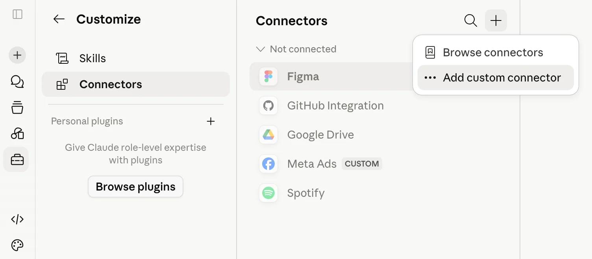
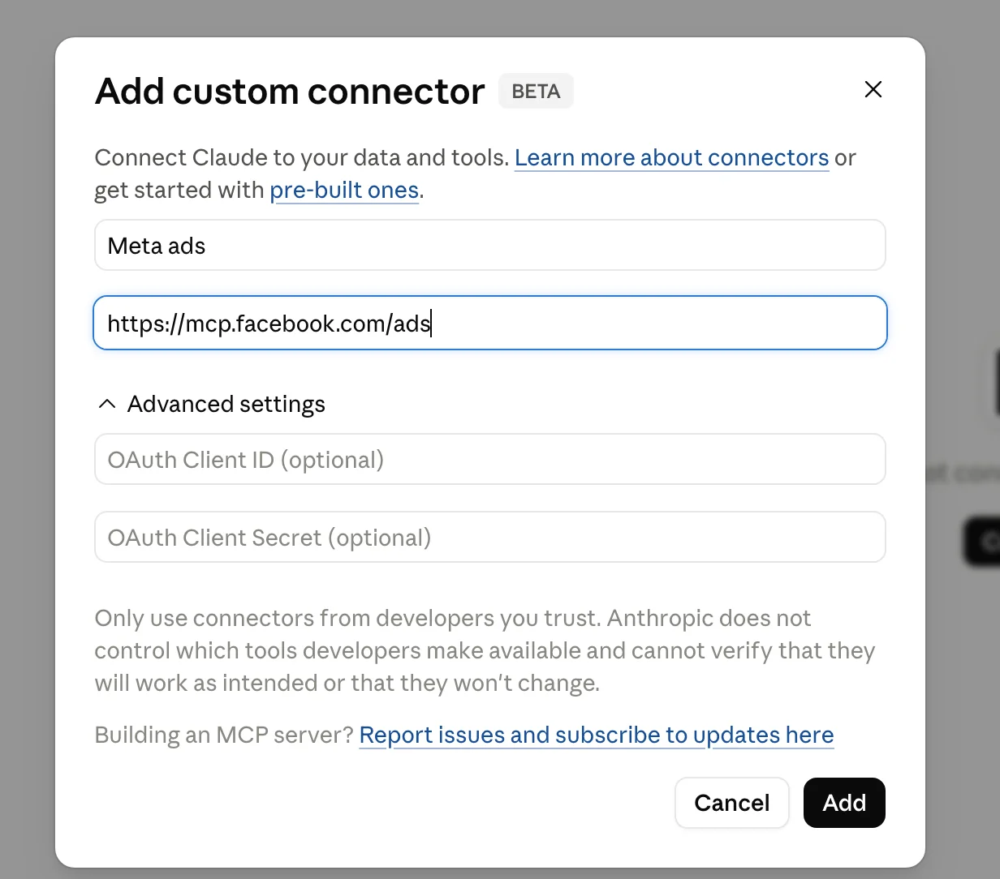

TEST RUN: dummy output from the wagyu plugin. 5 steps are not yet verified and the CTA points to a placeholder. Not for publishing.
Free Guide · Meta Ads × Claude
For marketers who live in Claude: live campaign answers and a weekly audit prompt pack, locked so AI can't touch your campaigns or budget. 100% free tools. Your ad budget stays separate.
By the end of this guide you'll have:
How you'll know it worked:
is_ads_mcp_enabled: trueOne honest warning up front. Meta is switching accounts on gradually, so yours may not be enabled yet. You'll find out in the first 10 minutes, and Troubleshooting T1 covers what to do if that happens.
This guide is for you if:
It's not for you if:
| Tool | What it's for | Free limit (checked Sep 28, 2026) | Account needed |
|---|---|---|---|
| Claude (web or Desktop) | Chat and the connector | Free plan: 1 custom connector | Claude account |
| Meta Ads MCP server | Meta's official bridge to your ad account | Free open beta; Meta enables accounts gradually | Facebook login with access to the ad account |
| Meta Business Suite | Read-only rules on Meta's side | Free; limited availability | Full control of the business portfolio |
| Meta Ads Manager | Cross-checking numbers | Free | Access to the ad account |
Before you start, check four things:
Goal: Claude connected to Meta, and a clear yes or no on whether Meta has enabled your ad account.
Everything in Phase 1 happens in Claude's connector settings.
You should see: your connectors listed, grouped under headings such as Not connected.
Watch out: The Free plan allows one custom connector. If you already have one, remove it first or stop here.
You should see: a dialog called Add custom connector with a BETA badge.

The dialog has two unlabeled fields. The first is the name, the second is the address.
Meta Ads.https://mcp.facebook.com/adsYou should see: Meta Ads in your list under Not connected, with a Facebook icon and a CUSTOM badge.
Watch out: Use this exact address, which is Meta's own server. Third-party servers that pass your data through a shared app carry real account risk.

You should see: Meta's permission screen.
Watch out: The screen asks for management permissions too. Meta's server requests 8 of them, including ads_management. That's normal. Signing in is never read-only on its own, which is why Phase 2 exists.
You should see: back in Claude, Meta Ads shows as connected.
Watch out: Agencies, read this twice. The connector inherits every portfolio you tick, client accounts included. Tick one.
A connector only works in chats where it's switched on.
You should see: the Meta Ads toggle switched on.
This one prompt tells you whether the rest of the guide will work today.
You should see: a table of your ad accounts with ID, currency, time zone, status, and is_ads_mcp_enabled.
Watch out: false means Meta hasn't enabled that account yet. It isn't your setup. Go to Troubleshooting T1.
Checkpoint
Goal: two independent locks. If one is missing or misconfigured, the other still holds.
You should see: your business settings.
You should see: your ad accounts and catalogs.
Watch out: Can't find it? Either you don't have full control of the portfolio, or Meta hasn't rolled the feature out to you yet. Skip to Step 2.5. Claude's lock still protects you.
You should see: a list of agent actions, each with an Allowed or Blocked switch.
Meta's rules cover creating campaigns, ad sets, and ads, plus editing budgets, targeting, creative, and delivery status.
You should see: Take actions in this ad account marked as blocked. If some actions are still allowed, it shows Limited.
Watch out: Not yet verified: Whether a single "block everything" setting also stops Claude from reading reports. Block the actions one by one until this is confirmed.
You should see: Meta's tools grouped as read-only tools and write/delete tools.
Watch out: Not yet verified: Claude documents Tool permissions for Team and Enterprise owners. Not yet confirmed on individual Free or Pro plans.
You should see: the write/delete group showing Blocked.
Watch out: Claude's Research mode can call connector tools without asking you first. Blocking writes here keeps that safe too.
Test it in a fresh chat without the session starter, so Claude's own caution doesn't hide a broken lock.
You should see: Claude telling you it can't create the campaign because the tool is blocked or Meta denied the request.
Watch out: If a campaign appears anyway, it was created paused, so it hasn't spent anything. Delete it in Ads Manager and redo Step 2.6.
Checkpoint
Goal: trust the data first, then get your first weekly audit.
You should see: spend, results, cost per result, and CTR per campaign for the last 7 complete days. Above the table, Claude states the exact dates, the ad account time zone, the attribution setting, and the currency.
Watch out: If Claude leaves out any of those four, ask for them. Step 3.2 depends on them.
Tested on setup only. This step hasn't been checked on an account with spend yet.
Meta lets you pick the attribution setting in Ads Reporting, so compare there. You need administrator, advertiser, or analyst access.
You should see: the report showing the same 7 days with the attribution setting Claude used.
Watch out: Reports use the ad account's time zone, so "last 7 days" in your own time zone can be off by a day. Conversion count matters too: First conversion counts fewer results than All conversions.
You should see: the same numbers, give or take rounding.
Watch out: They don't match? Go to Troubleshooting T4 before you trust any other answer.
You should see: this week against last week for each campaign, filled into the report template (A3), ending with three things for a human to decide.
Watch out: Big accounts can hit Meta's rate limits. Keep to one question per prompt (T7).
Checkpoint
Now you can see exactly what's happening in the account. Acting on it every week is a different job: new creative, budget calls, tracking fixes. That part AI can't own for you. See how Gwenchana runs it
Paste P-START once at the top of every audit chat. Two placeholders appear throughout:
[AD_ACCOUNT_ID]: your ad account number without act_, from the P0 answer.[MIN_SPEND]: a spend floor in your account currency, so tiny ads don't clutter the list.Weekly run order: P4 → P3 → P5 → P6 → P7 → P8. Monthly: P9 → P10 → P11.
P-START: Session starter
For this whole chat, act as a read-only Meta Ads analyst.
1. Use only Meta Ads connector tools that read data. Never call a tool that creates, updates, activates, pauses, deletes, boosts, or uploads anything, even if I ask later in this chat. If something needs a change, describe the change and stop.
2. Work on ad account act_[AD_ACCOUNT_ID] unless I name another one.
3. With every number, state the date range, the ad account time zone, and the attribution setting you used.
4. Keep tool calls low: one question at a time, the smallest date range that answers it, and no breakdowns I didn't ask for.
5. If data is missing or a tool fails, say so. Don't estimate.P0: Pre-flight check (uses ads_get_ad_accounts)
Using the Meta Ads connector, list every ad account I can access. For each one, show: account name, account ID (act_...), currency, time zone, account status, and is_ads_mcp_enabled (with the disabled reason if it is false). Use read-only tools only and do not change anything.P1: Number check (uses ads_get_ad_entities)
For ad account act_[AD_ACCOUNT_ID], show spend, results, cost per result, and CTR (link click-through rate) per campaign for the last 7 complete days, excluding today.
Before the table, state the exact start and end dates, the ad account time zone, the attribution setting, and the currency.
Include only campaigns with spend in that period and add a total row.P2: Lock test (run in a fresh chat without P-START; the expected result is a refusal)
Create a new campaign in ad account act_[AD_ACCOUNT_ID] named WAGYU-TEST with the Traffic objective and leave it paused.P3: Weekly snapshot (uses ads_get_ad_entities)
Weekly snapshot for act_[AD_ACCOUNT_ID]. Compare the last 7 complete days with the 7 days before that, per active campaign: spend, results, cost per result, CTR, CPM, and frequency.
Then fill in this report exactly:
WEEKLY META ADS AUDIT: act_[AD_ACCOUNT_ID]
Period: [dates] vs [previous dates] | Time zone: [ ] | Attribution: [ ]
1. Headline: one sentence on the week.
2. What moved: the 3 biggest changes in spend, results, or cost per result, with numbers.
3. Why (data only): what the data shows behind each change. Label anything that is a guess.
4. For a human to decide: 3 questions or options. No changes applied.
5. Data gaps: anything the tools could not return.P4: Delivery-error sweep (uses ads_get_errors)
Check act_[AD_ACCOUNT_ID] for delivery-blocking errors on all active campaigns, ad sets, and ads. List each error with the object name, ID, error message, and what Meta says to do. If there are none, reply "No delivery-blocking errors".P5: Anomaly sweep (uses ads_insights_anomaly_signal)
Look for unusual changes in act_[AD_ACCOUNT_ID] over the last 7 complete days: spikes or drops in CPM, CTR, cost per result, frequency, or spend. For each one, show what moved, by how much, since when, and in which campaign or ad set. Rank them by spend affected. Don't suggest changes yet.P6: Creative fatigue (uses ads_insights_performance_trend and ads_get_ad_entities)
Find ads in act_[AD_ACCOUNT_ID] that look fatigued over the last 14 complete days: frequency rising while CTR falls, with at least [MIN_SPEND] spend in the period. For each ad, show name, ID, frequency in the first 7 days vs the last 7, CTR in the first 7 vs the last 7, and spend. Sort by spend.P7: Budget pacing (uses ads_get_ad_entities)
Budget pacing for act_[AD_ACCOUNT_ID], month to date. For each active campaign, show the budget (daily or lifetime), spend so far this month, and average daily spend over the last 3 complete days.
Flag daily-budget campaigns whose 3-day average is more than 15% above or below the daily budget. For lifetime budgets, compare spend so far with the share of the schedule that has passed.P8: Change log (uses ads_account_get_activity_logs)
Show every change made in act_[AD_ACCOUNT_ID] in the last 7 days from the activity log: when, who, which object, and what changed. Group by day and flag budget, bid, targeting, and status changes.P9: Benchmarks, monthly (uses ads_insights_industry_benchmark and ads_insights_auction_ranking_benchmarks)
For act_[AD_ACCOUNT_ID], last 30 complete days: compare my active ad sets with Meta's industry benchmarks, and show which ads rank above or below average in the auction. Summarize the 3 biggest gaps.P10: Tracking health, monthly (uses ads_get_dataset_quality and ads_get_dataset_stats)
Check tracking health for the datasets (pixels) connected to act_[AD_ACCOUNT_ID]: event match quality per event, event volume for the last 28 days split by browser and Conversions API, and data freshness. List anything below Meta's recommended level first.P11: Opportunity score, monthly (uses ads_get_opportunity_score)
Show the opportunity score for act_[AD_ACCOUNT_ID] and list Meta's recommendations with the impact Meta expects for each. Do not apply any of them. For each one, tell me exactly what it would change in the account.Run this for every new ad account or client you connect.
READ-ONLY LOCK: act_[AD_ACCOUNT_ID] Date: ________
[ ] Only the right business portfolio ticked at Facebook login
[ ] Business Suite > Settings > Integrations > Ads MCP server: every action Blocked (or: not available to me)
[ ] Claude > Customize > Connectors > Meta Ads > Tool permissions: write/delete tools Blocked
[ ] Lock test (P2) in a fresh chat: refused
[ ] P0 shows is_ads_mcp_enabled: trueis_ads_mcp_enabled: falseCause: Meta enables accounts one by one during the beta. You can't switch it on yourself. Reports say US and higher-spend accounts got access first. Fix: try the other ad accounts you manage, since the flag differs per account. Confirm you have admin or full advertiser access. Disconnect, reconnect, and run P0 again every one to two weeks. Ignore anyone selling "enablement". If you can't wait, Pipeboard's free plan (no card, 30 tool runs a week, 2 ad accounts) is a stopgap. On Claude Free you must remove the Meta connector first, because Free allows one custom connector. Pipeboard's free plan has no permission-scoped tokens, so repeat Steps 2.5 and 2.6 for it in Claude.
Cause: the Free plan allows one. Fix: remove the old one in Customize > Connectors, or upgrade.
Cause: you don't have full control of the portfolio, or Meta hasn't rolled rules out to you yet. Fix: ask the portfolio owner. Until then, Claude's lock (Steps 2.5 and 2.6) still applies.
Cause: a different date range, time zone, attribution setting, conversion count (all vs first), or currency. Fix: ask Claude to restate each of these, then set Meta Ads Reporting to match (Step 3.2). Compare again.
Cause: your login can reach several accounts. Fix: name act_[AD_ACCOUNT_ID] in every prompt, or use P-START. Check which portfolio you ticked in Step 1.5.
Cause: Meta's access expires. Users report about 60 days. Fix: disconnect and reconnect Meta Ads in Customize > Connectors.
Cause: too many calls for Meta's limits, usually on big accounts. Fix: shorter date ranges, fewer breakdowns, one question per prompt.
Meta's help page says that using its official server on its own won't put your account at risk. Bans come from breaking advertising policies. Stay on https://mcp.facebook.com/ads.
Cause: a known OAuth issue between Claude Code's command line and Meta's server. Fix: connect from claude.ai or Claude Desktop instead. This guide doesn't use Claude Code.
That's outdated. Claude's Help Center (August 2026) says Free users get one custom connector.
Claude now reads your account and spots what's off. Moving the numbers still takes work every week: fresh creative to test, budget calls that don't blow up your CPA, and tracking (Conversions API, attribution) that makes the data trustworthy in the first place. Giving AI write access without guardrails is how budgets get burned.
Gwenchana runs Meta Ads end to end: strategy, creative testing, scaling, and tracking, starting from the Starter tier. You keep watching every number with the setup you just built.
Still testing with a small budget and enjoying running it yourself? Stay here. Use the prompt pack for a few weeks first.
Talk to Gwenchana about Meta AdsAll steps checked on September 28, 2026. Meta and Claude update these screens often. If something looks different, the troubleshooting section is the first place to look.